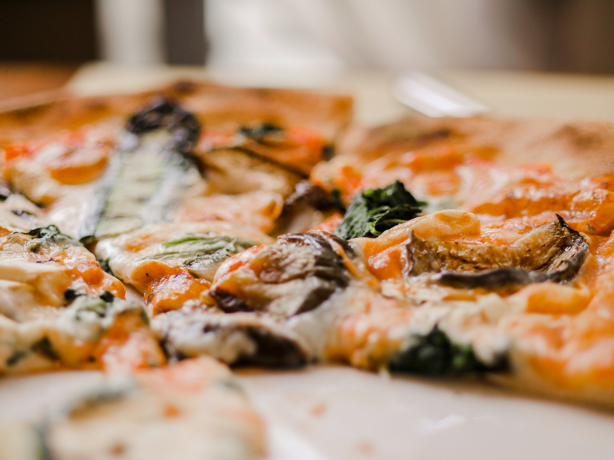

Yemek tutkunlarının buluşma noktası olan sitemize hoş geldiniz! Burada, mutfakların büyülü dünyasına adım atacak, damak tadınıza hitap eden tariflerle tanışacaksınız. Her bir tarifimiz, özenle seçilmiş malzemelerle hazırlanmış, sizi ve sevdiklerinizi keyifli bir yemeğe davet ediyor. İster pratik, hızlı yemekler arıyor olun, ister özenle hazırlanmış özel sofralar için ilham arayın, doğru yerdesiniz.
Daha Fazla Tarif İçin Tıklayınız
3 Peynirli Pizza

Malzemeler:
- 2 su bardağı un
- 100 gram eritilmiş tereyağı
- 1 paket instant maya (10 gram)
- 1 su bardağı domates sosu veya pizza sosu
- 1 çay kaşığı kekik
- 100 gram rendelenmiş mozzarella peyniri
- 1/2 su bardağı rendelenmiş parmesan peyniri (isteğe bağlı)
- Taze fesleğen veya kekik (isteğe bağlı, süslemek için)
Yapılışı:
- Ilık suyun içine şeker ve maya ekleyip karıştırın. 5 dakika bekletin.
- Unu geniş bir kaba alın. Üzerine tuz ekleyin. Ortasını açıp maya karışımını ve zeytinyağını ekleyin.
- Hamuru yağlı bir kaba alın, üzerini kapatın ve 1 saat kadar mayalanmaya bırakın. Hamur iki katına çıkmalıdır.
- Önceden ısıtılmış 220°C (425°F) fırında 15-20 dakika pişirin. Hamurun kenarları altın rengini almalı ve peynirler tamamen erimelidir.
- Peynirleri çeşitlendirebilir veya damak zevkinize göre ek malzemeler (zeytin, mantar, biber gibi) ekleyebilirsiniz.
Deneyenler Yorumluyor!
-

Pelin.y
“Üç peynirli pizza tarifini denedim ve sonuç gerçekten mükemmel oldu! Hamuru çok lezzetli ve çıtır çıtır. Peynirlerin karışımı harika bir tat oluşturuyor. Mozzarella, kaşar ve beyaz peynirin uyumu müthiş. Ailem de bayıldı ve tarifimizi artık sık sık yapacağız.”
-

Merve.K
“Bu tarifi denedikten sonra evde pizza yapma konusunda kendime güvenim arttı. Hamurun yapımı oldukça basit ve peynirlerin kombinasyonu gerçekten lezzetli. Fırında pişirme süresi tarifteki gibi olursa, pizza tam kıvamında oluyor. Tarifi kesinlikle tavsiye ederim!”
-

Sıla M.
“Tarifin adımlarını takip ederek mükemmel bir pizza yaptım. Hamur yumuşacık ve çıtır çıtır. Peynirler eridiğinde pizza üzerinde harika bir doku oluşturdu. Tarifi uygularken birkaç malzemeyi biraz daha artırdım ve sonuç mükemmel oldu. Özellikle arkadaşlarım çok beğendi.”